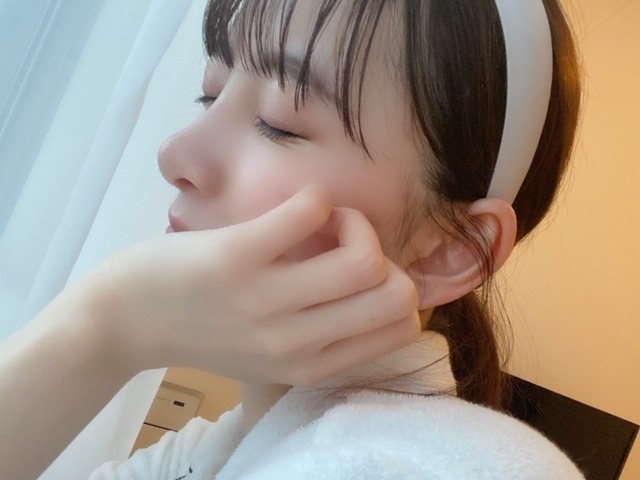

2020/0428Tueいつかのはなし
こんばんは
たくさんおすすめの曲を教えてくださり
ありがとうございます ☾
みなさんのおすすめ曲を聴いていて
初めて知れた曲もありましたし
素敵な曲にもたくさん出会えました
最近は寝る前に
歌詞を見て曲を聴いてMVを見て
曲や歌詞の意味を考えたりしています☺︎☺︎

･*☽
部屋着でダラダラしていてもなーと思い
メイクをささっとして
カチューシャをしてみました!
ちょっと気分が上がりました! 単純!

最近はですね、
語学の勉強をちょいとしたり
あとは、気になってたアニメを見始めたり
してます
YouTubeでもいろいろ観てますね〜

堀家はこうしていろんなおかずを
自分のプレートに盛り付けて
箸の混じり合いが無い食事方法に
変わりました!
一つのものを一緒に食べるのは
よくないみたいです
あと、手の消毒液が洗面所に置かれました☺︎
朝から寝る前までなるべく窓を開けて
換気もしています
みなさんも、出来ることから始めましょう!

あ、お知らせです
5月23日発売
アップトゥボーイVol.292
表紙巻頭をやらせていただきます!
5月27日発売の2nd写真集から
未公開カットをバーン!と20Pも
掲載していただきます☺︎
わーい☺︎
是非写真集と共にご覧ください꙳✧˖°
でははは
2020/04/28 19:48
コメント(444)
未央奈！最近未央奈が大好きでやばいんです 質問です！未央奈、パーカー着てたけど、パーカーの時下は何履いてるんですか？私のファッションのお手本にしたいです！
質問です！未央奈、パーカー着てたけど、パーカーの時下は何履いてるんですか？私のファッションのお手本にしたいです！
はじめまして、こんにちは
未央奈さんはいろんな音楽を聴くんですね。
僕もチャットモンチーやスピッツ、RADWIMPSなどが大好きなので、未央奈さんも聴いてると知って嬉しかったです！
見てないかもしれないけど、僕は10-feetをオススメします！
おじさん3人のロックバンドですが、とにかくライブが熱いです！蜃気楼という曲がとても好きなので聴いてみてください！
未央奈さんはいろんな音楽を聴くんですね。
僕もチャットモンチーやスピッツ、RADWIMPSなどが大好きなので、未央奈さんも聴いてると知って嬉しかったです！
見てないかもしれないけど、僕は10-feetをオススメします！
おじさん3人のロックバンドですが、とにかくライブが熱いです！蜃気楼という曲がとても好きなので聴いてみてください！
みおなちゃんまじで好きすぎます。応援します！
この期間を頑張って乗り越えましょう！
この期間を頑張って乗り越えましょう！
堀ちゃん、おはよう(・_・)
堀家のご飯はバイキング形式か、いいなぁ
時間を有効に使うべきだが、だらけとの真っ向勝負になるだろう！
ではではでは。
堀家のご飯はバイキング形式か、いいなぁ
時間を有効に使うべきだが、だらけとの真っ向勝負になるだろう！
ではではでは。
堀さん 可愛い！
そして食卓のごはんも美味しそう！
堀さんの家のオススメ料理など
ありましたらレシピ付きでぜひ
紹介いただきたいです。
月末を楽しみにしております。
そして食卓のごはんも美味しそう！
堀さんの家のオススメ料理など
ありましたらレシピ付きでぜひ
紹介いただきたいです。
月末を楽しみにしております。
未央奈ちゃんの白カチューシャと白部屋着姿
もとても可愛い

もとても可愛い
堀ちゃんもたくさん曲を教えてくれてありがとう！
今、少しずつ聴いているよ〜
家では感染症対策しっかりしているんだね
ご飯おいしそうです笑
そういえば、猿に会う見たよ〜
ミステリアスな雰囲気の役柄が堀ちゃんに合っていると思った！
結構怖かったな…笑
堀ちゃんのお芝居は、さすが先輩という感じだったな〜
4期生の良いお手本になったんじゃないかな
では、またね
今、少しずつ聴いているよ〜
家では感染症対策しっかりしているんだね
ご飯おいしそうです笑
そういえば、猿に会う見たよ〜
ミステリアスな雰囲気の役柄が堀ちゃんに合っていると思った！
結構怖かったな…笑
堀ちゃんのお芝居は、さすが先輩という感じだったな〜
4期生の良いお手本になったんじゃないかな
では、またね
大好きな未央奈ちゃんおはよう!食べる事が大好きな未央奈ちゃんにいつか、公式お兄ちゃんの日村さんや設楽さんや乃木坂４６メンバーやOGや後輩グループや芸能人の仲良しな人と一緒に(もちろん、ピンでも嬉しい)バナナマンのせっかくグルメとかのロケに行ってほしいなあ!私は未央奈ちゃんの美味しそうに食べてる姿が大好きだから!いつか、メンバーやバナナマンさんにも、未央奈ちゃんおすすめの地元のまるでぶ総本店にも行ってほしいですね!後、さくちゃんのご両親がやっているお蕎麦屋さんにも、行ってほしい!もちろん、私も、いつか、両方行ってみたい!
食事の仕方も考えてて素晴らしいですね！
写真集楽しみにしてます！
写真集楽しみにしてます！
おはようございます
僕は極度の緊張しぃなので
まだ、握手会に行ったことがありません
可愛い女の子を前にして
普通に会話なんて
とても、とても、、、
このコメントも読まれてるのかと
思うと顔が真っ赤になります
あぁ、恥ずかしい。。。
でも会いたいって気持ちは大きいんですよ！
握手しに行ってもモジモジして
何も喋れず事故になる可能性が高いので
踏ん切りがつかないんですよね。。。
とにかく、大好きです
この気持ちだけでも伝わるといいな
僕は極度の緊張しぃなので
まだ、握手会に行ったことがありません
可愛い女の子を前にして
普通に会話なんて
とても、とても、、、
このコメントも読まれてるのかと
思うと顔が真っ赤になります
あぁ、恥ずかしい。。。
でも会いたいって気持ちは大きいんですよ！
握手しに行ってもモジモジして
何も喋れず事故になる可能性が高いので
踏ん切りがつかないんですよね。。。
とにかく、大好きです
この気持ちだけでも伝わるといいな
ブログ更新ありがとうございます！
未央奈ちゃんカチューシャとっても似合いますね、いろんなカチューシャつけてみてほしいです^_^
最近暖かい気温になることが多いですね、未央奈ちゃんがいつかのブログで 空を見上げることが多いと言っていたので、私もよく空を見上げるようになりました！毎日違う空でなんだか楽しいですね
素敵な1日になりますように
はなより
未央奈ちゃんカチューシャとっても似合いますね、いろんなカチューシャつけてみてほしいです^_^
最近暖かい気温になることが多いですね、未央奈ちゃんがいつかのブログで 空を見上げることが多いと言っていたので、私もよく空を見上げるようになりました！毎日違う空でなんだか楽しいですね
素敵な1日になりますように
はなより
白いカチューシャのまとめ髪・・・
やっぱ素敵、可愛い、とても似合ってる。
最後のお顔・・クリックリッお目目、キュッとした唇
への字の眉毛、モッチリお肌・・・
堪らないよ、その表情・・・
堀家の料理・・・ヘルシー！ ヘルシー過ぎない？
お肉が・・お肉がない？ あぁ～朝食か・・・
でも肉好き未央奈には足りてるの？
ステーキ、ハンバーグ、ウィンナー、ハム、ベーコン
生姜焼き、照り焼き、焼肉・・・ｅｔｃ、ｅｔｃ
欲求不足にならない？ 無性に食べたくならない？（笑）
じゃあね。
やっぱ素敵、可愛い、とても似合ってる。
最後のお顔・・クリックリッお目目、キュッとした唇
への字の眉毛、モッチリお肌・・・
堪らないよ、その表情・・・
堀家の料理・・・ヘルシー！ ヘルシー過ぎない？
お肉が・・お肉がない？ あぁ～朝食か・・・
でも肉好き未央奈には足りてるの？
ステーキ、ハンバーグ、ウィンナー、ハム、ベーコン
生姜焼き、照り焼き、焼肉・・・ｅｔｃ、ｅｔｃ
欲求不足にならない？ 無性に食べたくならない？（笑）
じゃあね。
こんにちは‼︎
ブログ更新、ありがとうございます♪
堀家では、おかずのプレートを分けているんですね‼︎
タオルを分けたりとか、食器を分けたりすることで、家族内感染を防げるっていいますよね。
我が家では、タオルは分けるようにしているし、食器もいつもよりは分けるようにしてはいるものの、そこまで厳密にはやってないなあ。
ちょっと検討してみますね♪
最近、ちょっと思ったこと。
乃木坂のキャッチフレーズ、『努力、感謝、笑顔』。
これって、本当に魔法の言葉だなあと。
苦境に立たされたり、何かに迷った時は、大体この言葉が大切なことを教えてくれます。
努力：
感染しない、感染させないために、それぞれが今出来ることを頑張る。
不要不急の外出はしない。
手洗い、うがいをまめにして、どうしても外出しなければならない時はマスクをして、ソーシャル・ディスタンスを守り、規則正しい生活、バランスの良い食事をする。
感謝：
自分たちの危険も顧みず、我々の命を救うために、日夜必死に働いてくれている医療従事者・エッセンシャルワーカーの人々に感謝する。
最前線で頑張ってくれている人たちへの、敬意と尊敬の念を忘れない。
笑顔：
経済への影響も計り知れず、今度世の中がどうなっていくのか、先が見えず不安になることもあるけど、どんな状況になっても下を向かず、笑顔を忘れず、ポジティブに。
明るい未来を信じて、前向きに。
これからもウイルスとの戦いは続いていくでしょうし、経済のリカバリーのために乗り越えていくべき課題はたくさんありますが、『努力、感謝、笑顔』を忘れずに、みんなで頑張っていきたいですね‼︎
皆さんとまた笑顔で会える日を楽しみにしています♪
ではでは、また。
今日も未央奈にとっていい1日になりますように♪
ブログ更新、ありがとうございます♪
堀家では、おかずのプレートを分けているんですね‼︎
タオルを分けたりとか、食器を分けたりすることで、家族内感染を防げるっていいますよね。
我が家では、タオルは分けるようにしているし、食器もいつもよりは分けるようにしてはいるものの、そこまで厳密にはやってないなあ。
ちょっと検討してみますね♪
最近、ちょっと思ったこと。
乃木坂のキャッチフレーズ、『努力、感謝、笑顔』。
これって、本当に魔法の言葉だなあと。
苦境に立たされたり、何かに迷った時は、大体この言葉が大切なことを教えてくれます。
努力：
感染しない、感染させないために、それぞれが今出来ることを頑張る。
不要不急の外出はしない。
手洗い、うがいをまめにして、どうしても外出しなければならない時はマスクをして、ソーシャル・ディスタンスを守り、規則正しい生活、バランスの良い食事をする。
感謝：
自分たちの危険も顧みず、我々の命を救うために、日夜必死に働いてくれている医療従事者・エッセンシャルワーカーの人々に感謝する。
最前線で頑張ってくれている人たちへの、敬意と尊敬の念を忘れない。
笑顔：
経済への影響も計り知れず、今度世の中がどうなっていくのか、先が見えず不安になることもあるけど、どんな状況になっても下を向かず、笑顔を忘れず、ポジティブに。
明るい未来を信じて、前向きに。
これからもウイルスとの戦いは続いていくでしょうし、経済のリカバリーのために乗り越えていくべき課題はたくさんありますが、『努力、感謝、笑顔』を忘れずに、みんなで頑張っていきたいですね‼︎
皆さんとまた笑顔で会える日を楽しみにしています♪
ではでは、また。
今日も未央奈にとっていい1日になりますように♪
未央奈ちゃん、おはよう。普通の眼も見たいなぁ。
未央奈ちゃんは目を見開いてるからポーカーフェイスになるんだろうな。
笑顔もかわいいのに。
カチューシャの語源はトルストイの小説の主人公の女性の名前だってね。
未央奈ちゃんは目を見開いてるからポーカーフェイスになるんだろうな。
笑顔もかわいいのに。
カチューシャの語源はトルストイの小説の主人公の女性の名前だってね。
未央奈～❤️
今日は晴れてて嬉しいね！
家でゆったり過ごしております～
今日は２月に注文していました、バスラの生写真カードが届くとのことなのでそちらを楽しみに待っております～☺️
今日、のぎたびの表紙が解禁になったね！
私は解禁されてからどちらを予約するか決めて買おうと思ってたのですが、モバイル限定verを予約 しました！
今からとっても楽しみ♪♪
どっちも可愛くて好きだけど、やっぱり仲良さそうな2shotなのと、限定にひかれた❤️
今日は晴れてて嬉しいね！
家でゆったり過ごしております～
今日は２月に注文していました、バスラの生写真カードが届くとのことなのでそちらを楽しみに待っております～☺️
今日、のぎたびの表紙が解禁になったね！
私は解禁されてからどちらを予約するか決めて買おうと思ってたのですが、モバイル限定verを予約 しました！
今からとっても楽しみ♪♪
どっちも可愛くて好きだけど、やっぱり仲良さそうな2shotなのと、限定にひかれた❤️
堀さん、こんにちは。
こと洋楽はまず音楽が気に入って聴き始めるわけですが、そのうちやっぱり詞で何を歌っているのか気になって調べて、原語を訳してみたりします。ま、外国語の歌詞が日本語に聞こえる現象、いわゆる「空耳」もまた楽しいのですけれど。
ゆるく部屋着でいても、軽くメイクしてカチューシャ着けるだけで気分がシャキッとするのがいいですね。♪ねえシャキットイズムよろしく（笑）
おかずを一人ひとり小分けにするのも幕の内弁当みたいでよいかも。もちろん食事の前にもしっかり手を洗って。できることをきちんと守って、健康にすごしていきましょう。
ではまたコメントします。今日はいい天気ですねえ。
さらばだ、また会おう！（気球に乗って去りぬ〜）
こと洋楽はまず音楽が気に入って聴き始めるわけですが、そのうちやっぱり詞で何を歌っているのか気になって調べて、原語を訳してみたりします。ま、外国語の歌詞が日本語に聞こえる現象、いわゆる「空耳」もまた楽しいのですけれど。
ゆるく部屋着でいても、軽くメイクしてカチューシャ着けるだけで気分がシャキッとするのがいいですね。♪ねえシャキットイズムよろしく（笑）
おかずを一人ひとり小分けにするのも幕の内弁当みたいでよいかも。もちろん食事の前にもしっかり手を洗って。できることをきちんと守って、健康にすごしていきましょう。
ではまたコメントします。今日はいい天気ですねえ。
さらばだ、また会おう！（気球に乗って去りぬ〜）
みおなさんブログ更新ありがとうございます。
そうですね！
コロナノイローゼにならないようできることからコツコツとやっていきます。
あと
みおなさん消毒液での手荒れとお体に気を付けてお過ごしください
そうですね！
コロナノイローゼにならないようできることからコツコツとやっていきます。
あと
みおなさん消毒液での手荒れとお体に気を付けてお過ごしください
みおなちゃん、こんにちは。
アップトゥボーイVol.292、僕はチェックしとくね。
2枚目の写真のみおなちゃん、めっちゃかわいいです。
みおなちゃん、体調に気をつけてね。
またコメントするね。
アップトゥボーイVol.292、僕はチェックしとくね。
2枚目の写真のみおなちゃん、めっちゃかわいいです。
みおなちゃん、体調に気をつけてね。
またコメントするね。
カチューシャみおなのかわいい写真ありがとう。
すごくうれしいです。
すごくうれしいです。
未央奈〜 応援しとるけんね
お互い頑張ろうねー！
お互い頑張ろうねー！
かわいい！!
なんのアニメ見てるのか気になる〜
なんのアニメ見てるのか気になる〜
未央奈ブログ更新ありがとう！
お体には気をつけて下さい！
これからも頑張ってね！
応援してます！
お体には気をつけて下さい！
これからも頑張ってね！
応援してます！
カチューシャかわいい
憧れます
憧れます
未央奈！
度々コメント失礼します～
生写真カードが届きまして、一番欲しがった8周年記念の未央奈ちゃんでましたー！！
嬉しいです☺️☺️
眺めて喜んでます♪♪
テンション上がってます♪♪
あとスティックライトホルダーも未央奈のやっぱり欲しいなと思って買いました！
今度ライブ行けるようになった時に使うね♪
全部、全部大事にするよ～☺️
度々コメント失礼します～
生写真カードが届きまして、一番欲しがった8周年記念の未央奈ちゃんでましたー！！
嬉しいです☺️☺️
眺めて喜んでます♪♪
テンション上がってます♪♪
あとスティックライトホルダーも未央奈のやっぱり欲しいなと思って買いました！
今度ライブ行けるようになった時に使うね♪
全部、全部大事にするよ～☺️
カチューシャかわいすぎー❤️
未央奈のブログ毎回、ちょー幸せになります！
今度、未央奈が持ってるカチューシャ見せて欲しいです！
未央奈のブログ毎回、ちょー幸せになります！
今度、未央奈が持ってるカチューシャ見せて欲しいです！
こんにちは！ブログ更新ありがとうございます！！
誰かと同居しているんですか？？？
ずっと一人暮らしだと思っていました！
これからも体調には気をつけてお元気で
誰かと同居しているんですか？？？
ずっと一人暮らしだと思っていました！
これからも体調には気をつけてお元気で
おうちでメイクアップ、結構人気だったり
気分転換になるみたいね！
パジャマカチューシャ姿かわいい～
昨日のモバメのみおなもめっちゃきれいで…
写真集早く見たい！
気分転換になるみたいね！
パジャマカチューシャ姿かわいい～
昨日のモバメのみおなもめっちゃきれいで…
写真集早く見たい！
未央奈ブログ更新ありがとうー！
未央奈のカチューシャ付けてる写真
めちゃくちゃ可愛いぃ
自分も手洗いうがいをしっかりとしてます✌️
未央奈も気おつけてネ
ではは！
未央奈のカチューシャ付けてる写真
めちゃくちゃ可愛いぃ
自分も手洗いうがいをしっかりとしてます✌️
未央奈も気おつけてネ
ではは！
こんにちは
こんばんは
おはようございます
カチューシャ未央奈可愛すぎる〜!!
sumikaとかベリーグッドマンって聴いてますか？
最近自分がよく聴くアーティストなのでもし聴いてなかったら聞いてみて下さい！(笑)
こんばんは
おはようございます
カチューシャ未央奈可愛すぎる〜!!
sumikaとかベリーグッドマンって聴いてますか？
最近自分がよく聴くアーティストなのでもし聴いてなかったら聞いてみて下さい！(笑)
みおな
こんばんは
ささっとメイク可愛いです
外でも可愛いメイクを披露できる日を願ってます
歌詞の意味で言うと、嵐になりますが5×20という曲に「みんなで揃って、ありがとうだなんて、当たり前じゃなくて、幸せな事なんだって、笑って今日を祝おう」という歌詞があるので、考えさせられる歌詞だと思って聴いてます
みんなで揃っては嵐5人の事ですが、他にもライブやイベントができる幸せは当たり前ではなく幸せな事という意味にも捉えられると思うので、またイベントができるようになったら、噛み締めていきたいです（前から当たり前にできる事ではないとは思っていたけど）
料理をそれぞれの箸で直接食べるのは、よくないから取り箸はいい事だと思います
最近は暖かくて、換気もへっちゃらだから小まめにやってます
みおなも気をつけて下さい
次のにもコメントします
ありがとうございました
こんばんは
ささっとメイク可愛いです
外でも可愛いメイクを披露できる日を願ってます
歌詞の意味で言うと、嵐になりますが5×20という曲に「みんなで揃って、ありがとうだなんて、当たり前じゃなくて、幸せな事なんだって、笑って今日を祝おう」という歌詞があるので、考えさせられる歌詞だと思って聴いてます
みんなで揃っては嵐5人の事ですが、他にもライブやイベントができる幸せは当たり前ではなく幸せな事という意味にも捉えられると思うので、またイベントができるようになったら、噛み締めていきたいです（前から当たり前にできる事ではないとは思っていたけど）
料理をそれぞれの箸で直接食べるのは、よくないから取り箸はいい事だと思います
最近は暖かくて、換気もへっちゃらだから小まめにやってます
みおなも気をつけて下さい
次のにもコメントします
ありがとうございました
未央奈♥大好き！ほんとにかわいい！
中3女子です！！未央奈みたいにかわいくなりたい…このコメント届いてるのかな？届いてたら嬉しいな～
質問です！私も陸上部なんですよ！！未央奈が陸上部だってこと知って嬉しすぎて発狂しました(笑)陸上部で何の種目でしたか？？
中3女子です！！未央奈みたいにかわいくなりたい…このコメント届いてるのかな？届いてたら嬉しいな～
質問です！私も陸上部なんですよ！！未央奈が陸上部だってこと知って嬉しすぎて発狂しました(笑)陸上部で何の種目でしたか？？
ブログ更新ありがとう！！
ご飯美味しそう〜！！普段と違う食事だから逆に楽しいかもね！
アップトゥボーイ楽しみ！！
ご飯美味しそう〜！！普段と違う食事だから逆に楽しいかもね！
アップトゥボーイ楽しみ！！
2枚目の写真
背景がキラキラだね♪
カードダス
だったら大当たりだね♪


背景がキラキラだね♪
カードダス
だったら大当たりだね♪
たったひとことで世界を動かしちゃうんだからすごいですよね。
ほんとにあたまがいいんですね。
ほんとにあたまがいいんですね。
未央奈ちゃんこんばんは‼ありがとうございます‼楽しみにしてます‼お疲れ様です。
未央奈ちゃん！ブログ更新ありがとうございます！！
カチューシャ未央奈ちゃん最強です！
堀家の食事方法とってもいいですね！！！
参考にします！
カチューシャ未央奈ちゃん最強です！
堀家の食事方法とってもいいですね！！！
参考にします！
未央奈ちゃん更新ありがとー
アニメ見始めてるんだね！
じゃ～そんな未央奈ちゃんに乃木坂LOVEから、オススメアニメを紹介しちゃうぞー！
☆オススメアニメ☆
１・かぐや様は告らせたい恋愛頭脳戦
２・ワールドトリガー
ぜひぜひみてね(⋈◍＞◡＜◍)。✧♡
アニメ見始めてるんだね！
じゃ～そんな未央奈ちゃんに乃木坂LOVEから、オススメアニメを紹介しちゃうぞー！
☆オススメアニメ☆
１・かぐや様は告らせたい恋愛頭脳戦
２・ワールドトリガー
ぜひぜひみてね(⋈◍＞◡＜◍)。✧♡
みおなかわいい
換気しすぎも気をつけてな！
よく寝て水飲んで栄養あるもん食いなな！
換気しすぎも気をつけてな！
よく寝て水飲んで栄養あるもん食いなな！
米イェール大学の研究者らは、新型コロナウイルス（COVID-19）を含む呼吸器系ウイルスの移動速度に与える室内の湿度の影響を研究した。研究報告によると、ウイルスの流行中、オフィスまたは自宅にいる人は、空気が乾燥しすぎていたり、湿度が高すぎる場合、感染リスクが高くなる。サイトYaleNewsが伝えた。
かわみおな
おいしいものビタミン食べて
元気でいてね
みおなかわいい
おいしいものビタミン食べて
元気でいてね
みおなかわいい
心がけがすごい！
自分も見習います笑
自分も見習います笑
素っぴん未央奈～(＾ω＾)
めちゃくちゃおしゃれな食事
おかず入れるガラスの容器もおしゃれ
おかず入れるガラスの容器もおしゃれ


ブログ更新ありがとう！
そうやってコロナ対策をしているのはすごいと思います！
私もまねしてみます！
体調には気をつけて頑張ってください！